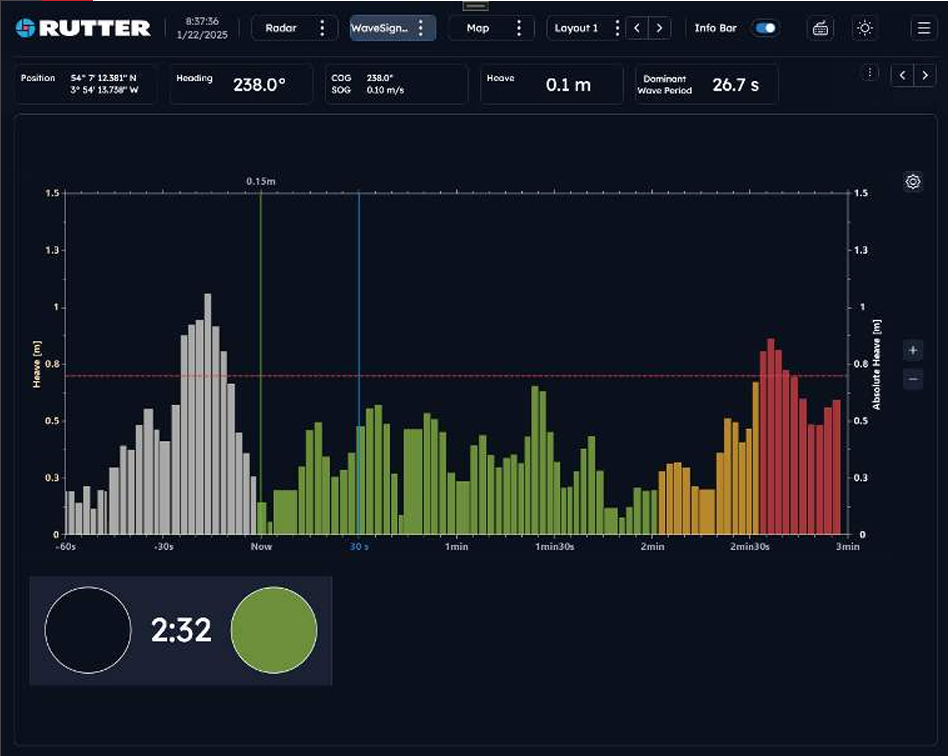
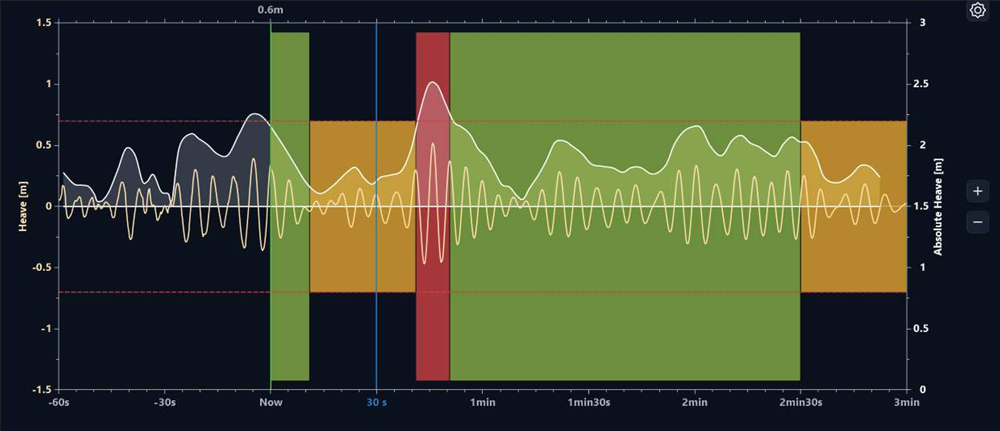

Predictive Wave Awareness
Delivers real-time wave prediction to help offshore crews identify calm periods for motion-sensitive tasks such as personnel transfers, heavy lifts, and helicopter landings.
Powerful radar analytics that transforms onboard X-band radar into a high-resolution wave prediction system with up to 180-second predictions of approaching waves.
Delivers real-time wave prediction to help offshore crews identify calm periods for motion-sensitive tasks such as personnel transfers, heavy lifts, and helicopter landings.
Simple red/green indicators and wave-graph views help operators quickly assess when it is safe to resume operations.
Reliable performance up to 20 knots, seamless integration with existing radar systems, and support for up to three IP-connected display points.

Go or no-go decisions made simple.
sigma S6 WaveSignalTM enables operators to make real-time decisions with a 180 second window into the future. Within that three minute horizon, WaveSignalTM identifies anomalous waves and indicates quiet periods using a simple red (stop) or green (go) signal so operations can pause or resume with confidence.
WaveSignalTM can be installed with a dedicated radar, or passively interface with commercially available marine radar. It is fully motion-compensated and operates equally well from vessels underway or fixed platforms (additional equipment may be required). A configurable wave detection and tracking system supports full customization of wave and time parameters based on operational requirements.
WaveSignalTM also offers an optional Deck Signal Panel synchronized with the bridge system. Personnel on the bridge and on deck can quickly see whether conditions are safe to proceed, including extended operating windows and quiet periods for cargo activity, walk-to-work transfers, ocean research, and related operations.

Use this section for wave prediction demonstrations, operator timing workflows, and offshore activity planning examples.
Seamlessly integrates with existing radar systems and supports distributed workflows across bridge and deck operations through IP-connected display points.

sigma S6 WaveSignalTM package:
Since 1998, Rutter has led innovation in radar image processing for the maritime industry worldwide. The sigma S6 product suite, whether deployed as individual systems or in combination, helps mariners go farther, faster, safer, and more economically.